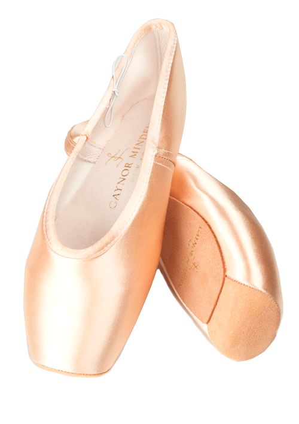

A sapatilha dura 3 a 6 vezes mais do que uma sapatilha de ponta “tradicional”, por ser fabricada com material extremamente moderno, à base de polímeros mais flexíveis e resistentes.
" Mais leve, menos barulhenta, dura mais, NÃO QUEBRA, jamais "
" Mais leve, menos barulhenta, dura mais, NÃO QUEBRA, jamais "
Benefícios
Durabilidade
As sapatilhas de ponta Gaynor Minden combinam design, mão de obra especializada e materiais inovadores.
Flexibilidade
Devido à flexibilidade e macies, as pontas da Gaynor não precisam ser quebradas.
O solado de nossas pontas é fabricado com uma curvatura que seguem o arco de seus pés.
Leveza
Esta é a primeira ponta que lhe oferece um sistema de amortecimento anti-shock, proporcionando leveza e suavidade durante seus saltos.